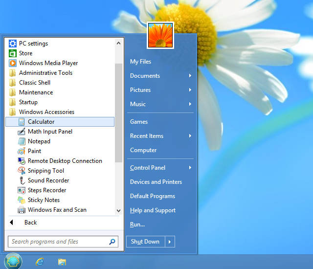
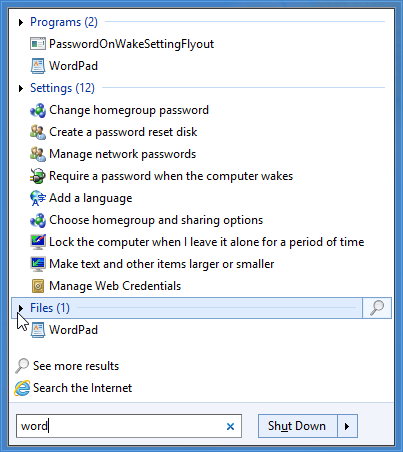

Open-Shell Menu
Open-Shell Menu
Open-Shell Menu
is a flexible start menu that can mimic the menu behavior of Windows
2000, XP and Windows 7. It has a variety of advanced features:
- Choose between “Classic” and “Windows 7” styles
- Drag and drop to let you organize your applications
- Options to show Favorites, expand Control Panel, etc
- Shows recently used documents. The number of documents to display
is customizable
- Translated in 35 languages, including Right-to-left support for
Arabic and Hebrew
- Does not disable the original start menu in Windows. You can
access it by Shift+Click on the start button
- Right-click on an item in the menu to delete, rename, sort, or
perform other tasks
- The search box helps you find your programs and files without getting in the way of your keyboard shortcuts
- Supports jumplists for easy access to recent documents and common tasks
- Available for 32 and 64-bit operating systems
- Has support for skins, including additional 3rd party skins. Make your own!
- Fully customizable in both looks and functionality
- Support for Microsoft’s Active Accessibility
- Converts the “All Programs” button in the Windows menu into a cascading menu
- Implements a customizable start button
- Can show, search and launch Windows Store apps (Windows 8)
- And last but not least – it's FREE!
Styles
The start menu offers 3 styles to choose from.
1) Single-column classic style

This style is similar to the menu found in Windows 2000. It has one
column in the main menu with vertical text on the side. you can
customize the order of items, icons and text.
Programs, jumplists and search results show as cascading sub-menus.
2) Two-column classic style
This style is similar to the Windows XP menu. There are two columns
where you can arrange your menu items. Customize the order, icons and
text.
Programs, jumplists and search results show as cascading sub-menus.
3) Windows 7 style

This style is similar to the Windows Vista and Windows 7 menu. The
items in the first column are pre-defined to pinned and recent
programs, all programs list and search box. The items in the second
column are fully customizable.
The jumplists and search results show inside the main menu. The
programs can be inside the main menu or open as a cascading sub-menu.
This style offers less customizing options than the classic styles, but
has look and feel more familiar to people used to Windows 7.
Operation
If you have used the start menu in older versions of Windows you’ll
feel right at home:
Press the Windows key or click on the orb in the corner of the
screen to open the start menu.
Hold down Shift while clicking on the orb to access the operating
system's own
start menu.
Click on an item to execute it.
Drag a program to change the order of the programs in a menu, or to
move it to another folder.
Right-click on an item to rename it, delete it, explore it, sort the
menu, or perform other tasks.
Right-click on the orb to edit the settings for the start menu, to view this help file, or to
stop the start menu.
Settings
Right-click on the start button to access the settings:

You can choose from seeing only the basic settings, or all available
settings. Hover over each setting to see a description of what it's for. Type in the search box to find a setting by name.
Every setting has a default value. The default value can be constant,
or it may depend on the current system settings. Once you edit a
setting it becomes "modified" and is shown in bold. To revert to the
default value, right-click on the setting.
You can save the settings to an XML file, and later load them back.
Press the Backup button to access these functions. From there you can
also reset all settings to their default value.
Most settings will be changed immediately as you edit them. For example
you can edit the start menu, then while the Settings dialog is open,
access the start menu to see the changes. Small number of settings will
require you to exit the start menu before you can see the change.
Note: All Settings windows are resizable. Resize them and place them where you want them to be. They will remember the new position.
Click on the Customize Start Menu tab to customize the menu items. Depending on the style you will see different UI.
For classic styles you can customize both columns of the start menu and
create sub-menus. The left column shows the current items in the menu
and the right column shows the available menu items. Drag from the
right to the left to add items to the menu.

For the Windows 7 style you can only edit the items for the second column and there are no sub-menus.
Double-click on the icon to edit the item properties:
Here you can select a command for the item, its text, icon and other attributes. Press the Restore Defaults button to get the default text and icon for the chosen command.
The command can be:
- one of the predefined commands - from the dropdown
- custom executable string
- this can be a name of a program and its arguments, or even a URL
(like http://www.google.com). Environment variables like %SystemRoot% are supported
- left blank - then if the link attribute is used, it will act as a command
The link can be a path to a file or a folder. If it is a file, that
file will be executed. If it is a folder, that folder will be opened as
a sub-menu. Some menu items (like Programs and Favorites) have an implicit
link attribute, so for them the Link box will be disabled.
The icon can be:
- left blank - then if the link attribute points to a file or a folder, the icon of that file or folder will be used
- resource file,icon ID - for example %windir%\notepad.exe,2. Do not leave space between the file name and the comma. Make sure you are using the icon's resource ID, and not the icon's index. For best results use the [...] button next to the icon box
- ,icon ID - same as above, but the resource file is the MenuDLL.dll itself. This is useful when referring to the start menu's own icons
- icon file - for example C:\Program Files\Mozilla Thunderbird\Email.ico
- none - this will use a blank icon
If the label or the tip attribute start with $ (dollar sign), then the system will treat it as a name of a string in the StartMenuL10N.ini
file. The actual text will depend on the current language setting. This
is useful when creating a menu that can be used by multiple languages.
If you check "Insert Sub-items as Buttons", instead of showing the menu
item itself, the start menu will show the sub-items as a row of
buttons. By default the buttons are centered. You can align them to the
left by adding a separator as the last item, or align them to the right
by adding a separator as the first item. One possible use is to replace
the shutdown menu item with
separate buttons for shutdown, restart, log off, etc.
Administrative Settings
The settings are
per user and are stored in the registry. By default every user can edit
all of their settings. An administrator can lock specific settings, so
no user can edit them:

In this example the setting "Enable right-click menu" is locked to always
be unchecked and can't be changed by any user. This is achieved
by adding the setting to the HKEY_LOCAL_MACHINE\SOFTWARE\OpenShell\Menu registry key. Create a DWORD value called "EnableContextMenu" and set it to 0.
In some cases you may not want to lock the value for all users, but
simply modify the initial value of the setting. In such case add
"_Default" to the name of the value. For example if you want to context
menu to be disabled by default but still allow the users to enable it
if they wish, create a DWORD value named "EnableContextMenu_Default"
and set it to 0.
The easiest way to know the registry name of a setting and its value is to modify it, and then look it up in HKEY_CURRENT_USER\Software\OpenShell\StartMenu\Settings.
Sometimes you may want to lock a setting to its default value, but you
don't know what the default value is. Then create a DWORD value and set
it to 0xDEFA.
There is also a global setting "EnableSettings". Set it to 0 in the
registry to prevent the users from even opening the Settings dialog:

The start menu also checks most of the group policies set by the administrator. Run gpedit.msc and go to User Configuration -> Administrative Templates -> Start Menu and Taskbar. From there you can disable Run, Shutdown, Help, and other features. (Not available on Home versions of Windows).
Editing the settings through group policies is also supported. Extract the file PolicyDefinitions.zip found in the installation folder and read the document PolicyDefinitions.rtf for more details.
More About Skins
You can pick from the many pre-installed skins:

Or you can download and install additional 3rd party skins (from
the main website or from another place). After you download a new skin
you
must copy the .skin file to the Skins directory – usually C:\Program
Files\Open-Shell\Skins. After that it will be available in the settings.
Note: Some skins may be specifically designed for
Classic, Basic, or Aero mode. For example an Aero skin may require
glass support any will look weird if the Classic or Basic theme is
selected. Some Aero skins may also require specific glass color to be
selected.
You can create your own skin. You will need an image editor that
supports alpha channel (like Gimp or Photoshop) and a tool to edit
resource files (like Resource Hacker or Visual Studio). And of course
some talent for graphical design :). Read the Skinning Tutorial before you begin.
Search

The search box lets you search the contents of the start menu, the
programs in the PATH environment variable and the indexed files. You can have the search box
appear as a normal menu item and then you can get to it using the
up/down arrow keys. You can choose to have the search box selected by
default when you open the start menu. Or you can choose to activate the
search box only with the Tab key, so until you press Tab you can use
the keyboard for navigation as if the search box is not there.
The search results show in the main menu if you are using the Windows 7 style or in a sub-menu for the classic styles.
Click on each category to expand it and see more results. Click on the icon at the end to view all results in Explorer.
The classic styles allow you to register additional "search providers", which you can use to
search for the text from the search box. You run the search program
either by selecting it from the menu, or by
pressing Alt+key. In this example use Alt+A for Agent Ransack.

This is done by adding sub-items of the SearchBoxItem in the Customize Start Menu tab:

Open each of the sub-items and enter a command to start the search program. If you use %1 in the command, it will be replaced by the contents of the search box. If you use %2
it will be replaced by the url-style encoded search text. Enter a
label, tip, and icon to complete your menu entry. In the label text you
can use & to mark the accelerator character (for example &Agent Ransack).
Here are a few possible commands:
Search with Agent Ransack: "C:\Program Files\Agent Ransack\AgentRansack.exe" -r -f "%1"
Search with Everything: "C:\Program Files\Everything\Everything.exe" -search "%1"
Search with Google: http://www.google.com/#q=%2
Search with Bing: http://www.bing.com/search?q=%2
Custom Start Button
Open-Shell can add its own start button to the taskbar. It can
even replace the default start button in Windows 7. You can choose from
an Aero-style orb, a rectangular classic button, or
you can make your own. For a custom start button you need an image that
contain the 3 states of the button - normal, hot and pressed:

The image must be a 32-bit PNG or BMP. By default the width of the
image determines the size of the button. You can override that by
entering a custom width.
Read the Button Tutorial for more information about creating custom buttons.
You can find many custom start button images online. Here are few examples:
http://www.classicshell.net/forum/viewforum.php?f=18
http://www.sevenforums.com/themes-styles/34951-custom-start-menu-button-collection.html
http://www.sevenforums.com/customization/78291-big-group-custom-start-orbs.html
http://tutoriales13.deviantart.com/art/Orbs-153450418
Localization
The user interface (except the Settings dialog box) is localized in 35
languages.
The Settings dialog box is translated in a smaller number of languages.
The default installation contains only English. More languages can be
downloaded from the translations page. Make sure you download the translation package for the exact version of Open-Shell.
Command Line
The StartMenu.exe supports 5 command line parameters: -open, -toggle, -togglenew, -exit and -settings.
The first two do what the name suggests. One opens the classic start menu, the other
toggles it. You can use the parameters to create a shortcut in your
QuickLaunch bar that opens the start menu. Or to set a hotkey in
programs such as WinKey.
The third one "-togglenew" toggles the default Windows start menu (or start screen). It is useful if
you want to create a shortcut or a hotkey to open the default menu and use the Win
key for the classic menu.
Use "-exit" to exit the start menu. This command will only work if the start menu is not currently busy.
Use "-settings" to open the start menu settings. This is useful for creating a shortcut for editing the settings.
Accessibility
The start menu supports screen readers like JAWS,
or Microsoft's Narrator. If the accessibility support causes problems it can be disabled from the General Behavior tab of the Settings.